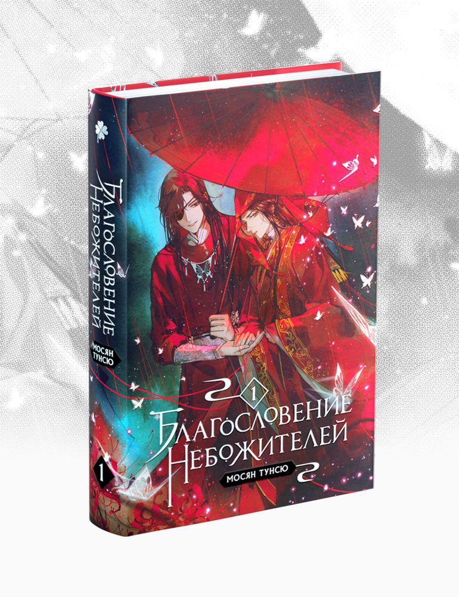
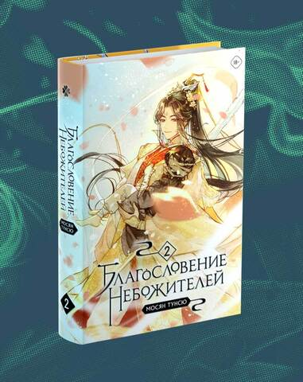
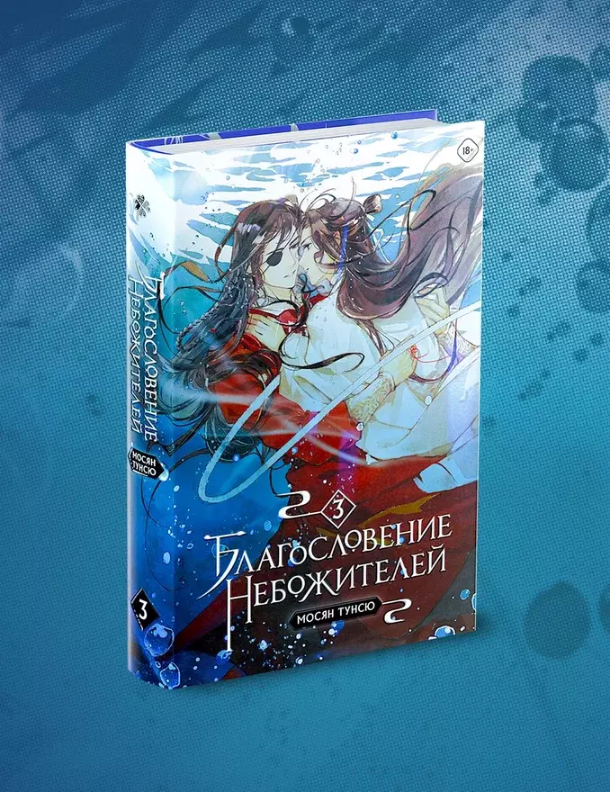
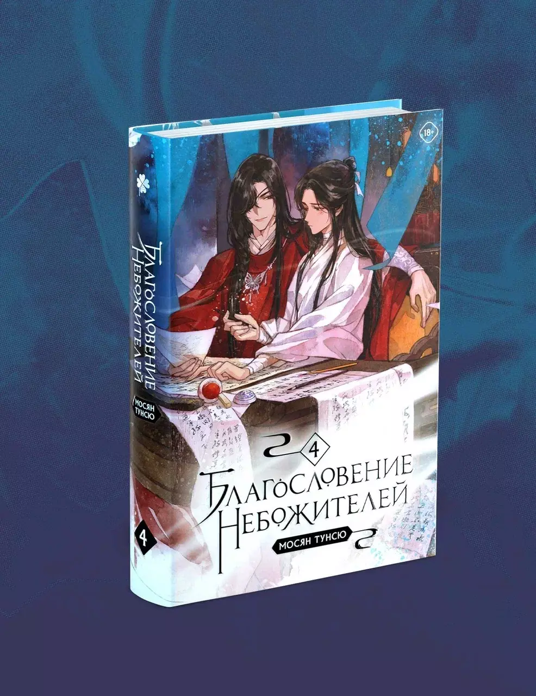
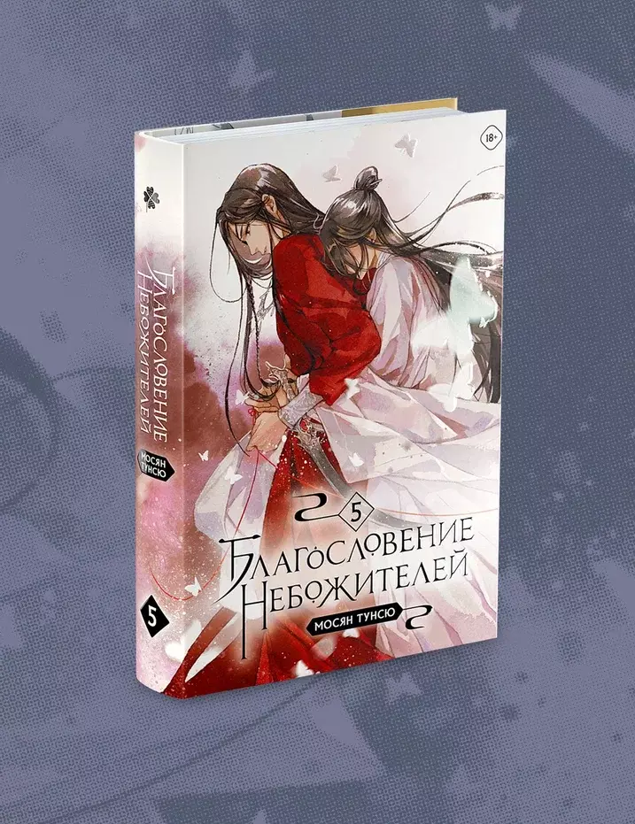
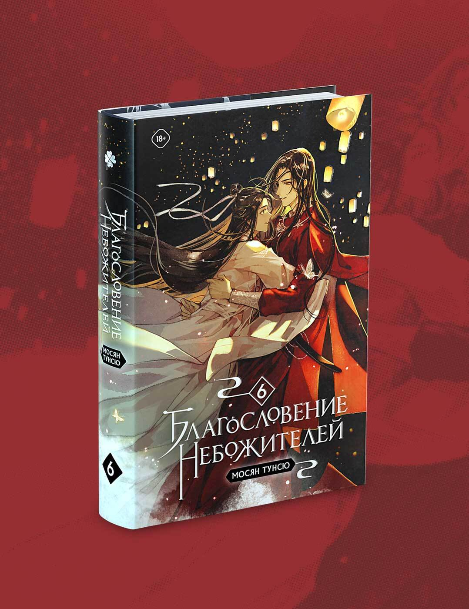

Регистрация.
Регистрация.
Мося́н Тунсю — китайская писательница фэнтезийных романов в жанре даньмэй. Начала публиковаться на китайской литературной онлайн-платформе «Цзиньцзян».
«Благословение небожителей» Мосян Тунсю — китайская новелла в жанре сянься. Это третье произведение автора и оно повторило ошеломительный успех книги «Магистр дьявольского культа». «Благословение небожителей» — это довольно объемное произведение, которое длится 6 томов.
В незапамятные времена Се Лянь был наследным принцем государства Сяньлэ. Судьба одарила его всем: прекрасным ликом, чистыми помыслами и бесконечной любовью своих подданных. И если уж кому-то и было предначертано стать божеством, то именно его высочеству. Однако удержаться на Небесах оказалось для него не так просто. Се Лянь возносился дважды и дважды был изгнан на землю. И вот спустя восемьсот лет скитаний его высочество вновь возвращается в Небесные чертоги. Получив своё первое задание в роли божества, он сталкивается с таинственным и невероятно могущественным демоном, который, как оказалось, уже давно положил глаз на наследного принца…
Беды преследуют Се Ляня одна за другой: вот он ненароком устроил поджог, а вот столкнулся с призраками прошлого, о которых предпочёл бы забыть… Восемьсот лет назад он был любимцем толпы, а матушка, отец и советник возлагали на него большие надежды. Слава о его подвигах стремительно достигла Небес, и в год своего семнадцатилетия Се Лянь вознёсся. Однако радость была скоротечна: в государстве Сяньлэ настали тяжёлые времена. Видя страдания своего народа, принц был не в силах остаться в стороне. Но может ли бог выбирать чью-то сторону?
Близится Праздник середины осени, а вместе с ним — роскошный пир и Состязание фонарей в небесных чертогах. Отправляясь на торжество, Се Лянь не подозревает, что окажется в центре внимания. По возвращении в мир смертных он принимается за работу, ведь теперь нужно прокормить сразу три лишних рта! К несчастью, на задании, которое получил принц, он вновь сталкивается с озлобленным духом младенца, однако Хуа Чэн успевает прийти на выручку. После всей неразберихи герои решают отдохнуть — но не тут-то было! На пороге храма Водяных Каштанов возникает Ши Цинсюань в сопровождении Мин И. Оказывается, Повелителя Ветра уже довольно давно преследует одна тварь: божок-пустозвон. Се Лянь соглашается помочь расправиться с ним, и тут дело принимает совсем дурной оборот…
Раз в сотню лет разгорается огонь в Медной Печи, и тысячи демонов откликаются на её зов. Они спешат к горе Тунлу — и каждый надеется выжить в смертельной схватке за право стать новым князем демонов. Предотвратить надвигающуюся угрозу по силам лишь небожителям. Но в столице бессмертных царит хаос: пленённая нечисть вырвалась на свободу, а боги войны заняты своими делами. Чтобы не допустить рождения очередного «непревзойдённого», Се Лянь отправляется к вулкану в сопровождении Хуа Чэна, вынужденного скрывать свой истинный облик под личиной маленького мальчика…
Путешествие к Медной Печи становится всё более непредсказуемым. По дороге к вулкану Се Лянь узнаёт шокирующую правду о Хуа Чэне, но герои даже не успевают объясниться, ведь Поднебесной грозит страшная опасность — Безликий Бай вернулся! Се Ляню предстоит разгадать тайну личности демона и отразить новую волну поветрия ликов, но перед этим он столкнётся с призраками прошлого… Что произошло с наследным принцем после первого низвержения? Как он всё потерял и опустился на самое дно? Какие страдания выпали на его долю? Кто заставил его блуждать во тьме, а кто помог обратиться к свету?
Две тысячи лет небесные чертоги стояли незыблемо, но любое пиршество рано или поздно кончается. Когда боги узнают страшную тайну, они бегут из столицы бессмертных, охваченной пламенем войны. Чтобы спасти три мира от существа, что сильнее всех ныне живущих, Се Ляню с Хуа Чэном придётся заручиться поддержкой не только старых друзей, но и старых врагов. Всё решится на мосту, что прежде вёл в Небеса, а теперь обрывается над огненной пропастью. Смогут ли герои, даже объединив силы, одолеть противника? И какова будет цена победы?
Ятаган Эмин — проклятое оружие, несущее горе. Для его создания требуются человеческие жертвы. Не дай ему ранить тебя или вообще прикоснуться: может случиться большая беда.
Призрачные бабочки — серебряные полупрозрачные бабочки, которых Хуа Чэн часто использует в бою. Говорят, что бабочки очень красивы, выглядят чистыми и прозрачными. Их внешний вид настолько блестящий, что во время полета они оставляют яркие следы в воздухе.
Веер Повелителя Ветра — любимый артефакт Ши Цинсюаня, бесценным артефакт, на создание которого ушло несколько сотен лет. На лицевой стороне бумажного веера был начертан иероглиф «ветер», на обратной стороне красовались три наклонные линии, похожие на потоки воздуха.
Фансинь — это меч Се Ляня. Первоначально он принадлежал Безликому Баю. «Холодное оружие было столь же опасным и ледяным, как самая холодная зимняя ночь».
Брильянтовое кольцо - это прах Хуа Чэна, который демон дарит своему возлюбленному, рискуя всем. Когда его спросили, был ли его прах достаточно защищен, он ответил , что нет более защищеного места.